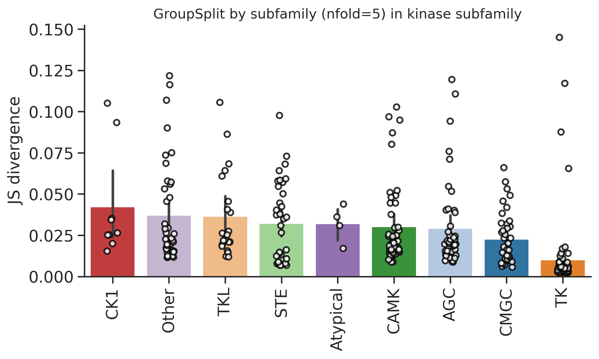
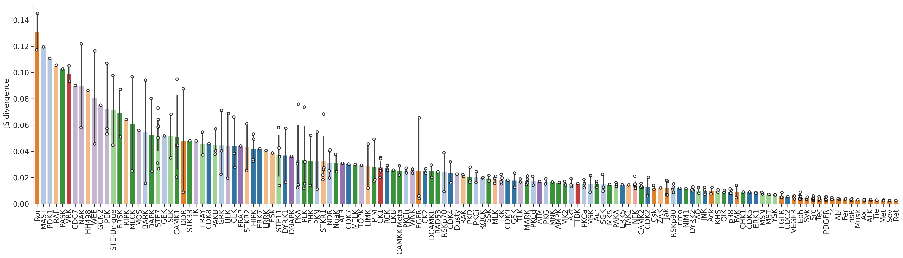
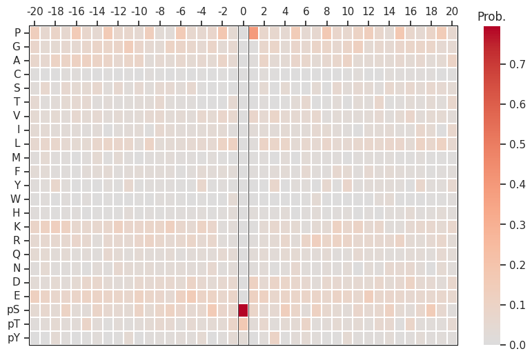
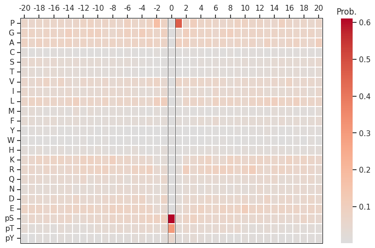
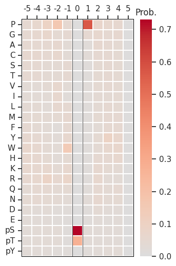

import numpy as np, pandas as pd
import os, random
from katlas.data import *
from katlas.train import *
from fastai.vision.all import *
from katlas.dnn import *DL training
Setup
seed_everything()def_device'cuda'Data
df=pd.read_parquet('train/cddm_t5.parquet')info=Data.get_kinase_info()
info = info[info.pseudo=='0']
info = info[info.kd_ID.notna()]
subfamily_map = info[['kd_ID','subfamily']].drop_duplicates().set_index('kd_ID')['subfamily']
family_map = info[['kd_ID','family']].drop_duplicates().set_index('kd_ID')['family']
group_map = info[['kd_ID','group']].drop_duplicates().set_index('kd_ID')['group']
kinase_info = pd.DataFrame(df.index.tolist(),columns=['kinase'])
kinase_info['subfamily'] = kinase_info.kinase.map(subfamily_map)
kinase_info['family'] = kinase_info.kinase.map(family_map)
kinase_info['group'] = kinase_info.kinase.map(group_map)df=df.reset_index()df.columnsIndex(['index', '-20P', '-19P', '-18P', '-17P', '-16P', '-15P', '-14P', '-13P',
'-12P',
...
'T5_1014', 'T5_1015', 'T5_1016', 'T5_1017', 'T5_1018', 'T5_1019',
'T5_1020', 'T5_1021', 'T5_1022', 'T5_1023'],
dtype='object', length=1968)# column name of feature and target
feat_col = df.columns[df.columns.str.startswith('T5_')]
target_col = df.columns[~df.columns.isin(feat_col)][1:]feat_colIndex(['T5_0', 'T5_1', 'T5_2', 'T5_3', 'T5_4', 'T5_5', 'T5_6', 'T5_7', 'T5_8',
'T5_9',
...
'T5_1014', 'T5_1015', 'T5_1016', 'T5_1017', 'T5_1018', 'T5_1019',
'T5_1020', 'T5_1021', 'T5_1022', 'T5_1023'],
dtype='object', length=1024)Split
kinase_info.subfamily.value_counts()subfamily
Eph 12
Src 11
STE7 7
NEK 7
CK1 6
..
PDK1 1
GCN2 1
CDC7 1
MAST 1
RAF 1
Name: count, Length: 136, dtype: int64kinase_info.family.value_counts()family
STE20 22
CAMKL 17
Eph 12
MAPK 12
Src 11
..
STK33 1
PDK1 1
CDC7 1
MAST 1
RAF 1
Name: count, Length: 88, dtype: int64kinase_info.group.value_counts()group
TK 80
CAMK 47
AGC 45
Other 40
CMGC 39
STE 35
TKL 21
CK1 9
Atypical 4
Name: count, dtype: int64splits = get_splits(kinase_info, group='subfamily',nfold=5)
split0 = splits[0]GroupKFold(n_splits=5, random_state=None, shuffle=False)
# subfamily in train set: 110
# subfamily in test set: 26Dataset
# dataset
ds = GeneralDataset(df,feat_col,target_col)len(ds)320dl = DataLoader(ds, batch_size=64, shuffle=True)xb,yb = next(iter(dl))
xb.shape,yb.shape(torch.Size([64, 1024]), torch.Size([64, 23, 41]))Model
n_feature = len(feat_col)
n_target = len(target_col)# def get_mlp(): return PSSM_model(n_feature,n_target,model='MLP')
def get_cnn(): return PSSM_model(n_feature,n_target,model='CNN')model = get_cnn()logits= model(xb)logits.shapetorch.Size([64, 23, 41])Loss
CE(logits,yb)tensor(3.3115, grad_fn=<MeanBackward0>)Metrics
KLD(logits,yb)tensor(0.5317, grad_fn=<MeanBackward0>)JSD(logits,yb)tensor(0.1252, grad_fn=<MeanBackward0>)CV train
cross-validation
oof = train_dl_cv(df,feat_col,target_col,
splits = splits,
model_func = get_cnn,
n_epoch=20,lr=3e-3,save='cnn_cddm')------fold0------
lr in training is 0.003| epoch | train_loss | valid_loss | KLD | JSD | time |
|---|---|---|---|---|---|
| 0 | 3.282649 | 3.128296 | 0.319262 | 0.081570 | 00:01 |
| 1 | 3.241650 | 3.113522 | 0.304488 | 0.079595 | 00:00 |
| 2 | 3.212050 | 3.113102 | 0.304069 | 0.077892 | 00:00 |
| 3 | 3.195983 | 3.120565 | 0.311531 | 0.078662 | 00:00 |
| 4 | 3.178256 | 2.976437 | 0.167403 | 0.044890 | 00:00 |
| 5 | 3.148183 | 2.948758 | 0.139725 | 0.036188 | 00:00 |
| 6 | 3.109516 | 2.925130 | 0.116096 | 0.029711 | 00:00 |
| 7 | 3.072004 | 2.909240 | 0.100206 | 0.026152 | 00:00 |
| 8 | 3.039572 | 2.904013 | 0.094980 | 0.025093 | 00:00 |
| 9 | 3.012379 | 2.898960 | 0.089926 | 0.023662 | 00:00 |
| 10 | 2.989801 | 2.899136 | 0.090103 | 0.023424 | 00:00 |
| 11 | 2.970484 | 2.899322 | 0.090289 | 0.023485 | 00:00 |
| 12 | 2.954165 | 2.898535 | 0.089501 | 0.023218 | 00:00 |
| 13 | 2.940085 | 2.897991 | 0.088957 | 0.023097 | 00:00 |
| 14 | 2.927743 | 2.896062 | 0.087028 | 0.022649 | 00:00 |
| 15 | 2.917165 | 2.895469 | 0.086436 | 0.022511 | 00:00 |
| 16 | 2.907989 | 2.896032 | 0.086999 | 0.022646 | 00:00 |
| 17 | 2.899801 | 2.895162 | 0.086129 | 0.022428 | 00:00 |
| 18 | 2.892946 | 2.894896 | 0.085862 | 0.022354 | 00:00 |
| 19 | 2.886997 | 2.894820 | 0.085787 | 0.022334 | 00:00 |
------fold1------
lr in training is 0.003| epoch | train_loss | valid_loss | KLD | JSD | time |
|---|---|---|---|---|---|
| 0 | 3.282195 | 3.130908 | 0.322224 | 0.081733 | 00:00 |
| 1 | 3.243584 | 3.113548 | 0.304865 | 0.078650 | 00:00 |
| 2 | 3.219855 | 3.120547 | 0.311864 | 0.079403 | 00:00 |
| 3 | 3.209427 | 3.087194 | 0.278511 | 0.069197 | 00:00 |
| 4 | 3.201059 | 2.992566 | 0.183883 | 0.048371 | 00:00 |
| 5 | 3.167005 | 2.937138 | 0.128454 | 0.033072 | 00:00 |
| 6 | 3.121017 | 2.924041 | 0.115357 | 0.029413 | 00:00 |
| 7 | 3.082160 | 2.915458 | 0.106775 | 0.027174 | 00:00 |
| 8 | 3.049422 | 2.906384 | 0.097700 | 0.025222 | 00:00 |
| 9 | 3.022278 | 2.902709 | 0.094025 | 0.024238 | 00:00 |
| 10 | 2.999649 | 2.899378 | 0.090695 | 0.023322 | 00:00 |
| 11 | 2.980213 | 2.898759 | 0.090075 | 0.023229 | 00:00 |
| 12 | 2.963545 | 2.898273 | 0.089589 | 0.022956 | 00:00 |
| 13 | 2.949331 | 2.897189 | 0.088506 | 0.022689 | 00:00 |
| 14 | 2.936587 | 2.896288 | 0.087604 | 0.022514 | 00:00 |
| 15 | 2.925316 | 2.894401 | 0.085718 | 0.022021 | 00:00 |
| 16 | 2.915478 | 2.893880 | 0.085196 | 0.021894 | 00:00 |
| 17 | 2.907102 | 2.893515 | 0.084832 | 0.021793 | 00:00 |
| 18 | 2.899950 | 2.893503 | 0.084820 | 0.021781 | 00:00 |
| 19 | 2.893546 | 2.893279 | 0.084595 | 0.021737 | 00:00 |
------fold2------
lr in training is 0.003| epoch | train_loss | valid_loss | KLD | JSD | time |
|---|---|---|---|---|---|
| 0 | 3.282472 | 3.127070 | 0.353896 | 0.091299 | 00:00 |
| 1 | 3.241385 | 3.109268 | 0.336093 | 0.088014 | 00:00 |
| 2 | 3.209924 | 3.114542 | 0.341367 | 0.087262 | 00:00 |
| 3 | 3.193899 | 3.053725 | 0.280551 | 0.073127 | 00:00 |
| 4 | 3.181828 | 2.961300 | 0.188125 | 0.050201 | 00:00 |
| 5 | 3.145959 | 2.931028 | 0.157853 | 0.041150 | 00:00 |
| 6 | 3.109088 | 2.925400 | 0.152225 | 0.038905 | 00:00 |
| 7 | 3.075637 | 2.922864 | 0.149690 | 0.038691 | 00:00 |
| 8 | 3.047635 | 2.909077 | 0.135902 | 0.035387 | 00:00 |
| 9 | 3.024517 | 2.901939 | 0.128764 | 0.033550 | 00:00 |
| 10 | 3.003808 | 2.899364 | 0.126189 | 0.032804 | 00:00 |
| 11 | 2.984565 | 2.898607 | 0.125433 | 0.032361 | 00:00 |
| 12 | 2.967488 | 2.896226 | 0.123052 | 0.031884 | 00:00 |
| 13 | 2.952080 | 2.895696 | 0.122522 | 0.031629 | 00:00 |
| 14 | 2.938943 | 2.895282 | 0.122107 | 0.031550 | 00:00 |
| 15 | 2.927504 | 2.894837 | 0.121663 | 0.031524 | 00:00 |
| 16 | 2.917730 | 2.893668 | 0.120494 | 0.031259 | 00:00 |
| 17 | 2.908983 | 2.893366 | 0.120192 | 0.031149 | 00:00 |
| 18 | 2.901532 | 2.893119 | 0.119945 | 0.031088 | 00:00 |
| 19 | 2.895179 | 2.893249 | 0.120075 | 0.031103 | 00:00 |
------fold3------
lr in training is 0.003| epoch | train_loss | valid_loss | KLD | JSD | time |
|---|---|---|---|---|---|
| 0 | 3.280588 | 3.129339 | 0.335539 | 0.085304 | 00:00 |
| 1 | 3.240295 | 3.119176 | 0.325376 | 0.083852 | 00:00 |
| 2 | 3.210839 | 3.091391 | 0.297591 | 0.077241 | 00:00 |
| 3 | 3.200143 | 3.042270 | 0.248470 | 0.065589 | 00:00 |
| 4 | 3.195208 | 3.029967 | 0.236167 | 0.060239 | 00:00 |
| 5 | 3.157714 | 2.951658 | 0.157859 | 0.039547 | 00:00 |
| 6 | 3.114407 | 2.937240 | 0.143440 | 0.036184 | 00:00 |
| 7 | 3.076996 | 2.915984 | 0.122185 | 0.031200 | 00:00 |
| 8 | 3.044734 | 2.903373 | 0.109573 | 0.028193 | 00:00 |
| 9 | 3.018122 | 2.900592 | 0.106792 | 0.027362 | 00:00 |
| 10 | 2.995771 | 2.897802 | 0.104002 | 0.026672 | 00:00 |
| 11 | 2.977186 | 2.896495 | 0.102695 | 0.026356 | 00:00 |
| 12 | 2.960754 | 2.895625 | 0.101826 | 0.026132 | 00:00 |
| 13 | 2.946897 | 2.895158 | 0.101358 | 0.025921 | 00:00 |
| 14 | 2.935326 | 2.893981 | 0.100182 | 0.025680 | 00:00 |
| 15 | 2.925143 | 2.893090 | 0.099290 | 0.025458 | 00:00 |
| 16 | 2.916389 | 2.892680 | 0.098880 | 0.025363 | 00:00 |
| 17 | 2.908602 | 2.891653 | 0.097853 | 0.025092 | 00:00 |
| 18 | 2.901875 | 2.891660 | 0.097860 | 0.025101 | 00:00 |
| 19 | 2.896487 | 2.891503 | 0.097704 | 0.025064 | 00:00 |
------fold4------
lr in training is 0.003| epoch | train_loss | valid_loss | KLD | JSD | time |
|---|---|---|---|---|---|
| 0 | 3.283504 | 3.130594 | 0.363589 | 0.093193 | 00:00 |
| 1 | 3.243992 | 3.116076 | 0.349071 | 0.090924 | 00:00 |
| 2 | 3.210798 | 3.120450 | 0.353445 | 0.090563 | 00:00 |
| 3 | 3.199268 | 3.072872 | 0.305868 | 0.079987 | 00:00 |
| 4 | 3.177695 | 2.966492 | 0.199487 | 0.053601 | 00:00 |
| 5 | 3.137152 | 2.917118 | 0.150113 | 0.039282 | -1:59:59 |
| 6 | 3.099840 | 2.911311 | 0.144307 | 0.037135 | 00:00 |
| 7 | 3.071257 | 2.897541 | 0.130536 | 0.034004 | 00:00 |
| 8 | 3.047829 | 2.894860 | 0.127856 | 0.033557 | 00:00 |
| 9 | 3.024281 | 2.900576 | 0.133571 | 0.034486 | 00:00 |
| 10 | 3.002414 | 2.898617 | 0.131613 | 0.034054 | 00:00 |
| 11 | 2.983205 | 2.894372 | 0.127367 | 0.032931 | 00:00 |
| 12 | 2.966494 | 2.888815 | 0.121811 | 0.031625 | 00:00 |
| 13 | 2.952212 | 2.885732 | 0.118727 | 0.031049 | 00:00 |
| 14 | 2.939676 | 2.885109 | 0.118105 | 0.030705 | 00:00 |
| 15 | 2.928643 | 2.883477 | 0.116472 | 0.030395 | 00:00 |
| 16 | 2.919168 | 2.882151 | 0.115146 | 0.030121 | 00:00 |
| 17 | 2.910880 | 2.881615 | 0.114610 | 0.030057 | 00:00 |
| 18 | 2.903741 | 2.881046 | 0.114041 | 0.029917 | 00:00 |
| 19 | 2.897946 | 2.881109 | 0.114104 | 0.029928 | 00:00 |
oof.to_parquet('raw/oof_cddm.parquet')Score
from katlas.pssm import *
from functools import partialdef score_df(target,pred,func):
distance = [func(target.loc[i],pred.loc[i,target.columns]) for i in target.index]
return pd.Series(distance,index=target.index)jsd_df = partial(score_df,func=js_divergence_flat)
kld_df = partial(score_df,func=kl_divergence_flat)target=df[target_col].copy()kinase_info['group_split'] = oof.nfoldkinase_info['group_jsd'] =jsd_df(target,oof)from katlas.plot import *set_sns()plot_bar(kinase_info,'group_jsd',group='group',palette=group_color,figsize=(8,4))
plt.ylabel('JS divergence')
plt.title('GroupSplit by subfamily (nfold=5) in kinase subfamily')Text(0.5, 1.0, 'GroupSplit by subfamily (nfold=5) in kinase subfamily')
group_color = pd.DataFrame(group_color).Tsty_color{'S': (0.12156862745098039, 0.4666666666666667, 0.7058823529411765),
'T': (0.6823529411764706, 0.7803921568627451, 0.9098039215686274),
'Y': (1.0, 0.4980392156862745, 0.054901960784313725)}group_color = group_color.reset_index(names='modi_group')info = Data.get_kinase_info()subfamily_color = info[['modi_group','subfamily']].merge(group_color).drop(columns=['modi_group']).set_index('subfamily')subfamily_color = subfamily_color.apply(tuple, axis=1).to_dict()plot_bar(kinase_info,'group_jsd',group='subfamily',palette = subfamily_color, figsize=(30,7))
plt.ylabel('JS divergence')
# plt.title('Stratified split in kinase subfamily')Text(0, 0.5, 'JS divergence')
from katlas.pssm import *def plot_one_pssm(target,pred,idx):
target_pssm = recover_pssm(target.loc[idx])
pred_pssm = recover_pssm(pred.loc[idx,target.columns])
plot_heatmap(target_pssm,figsize=(10,6))
plot_heatmap(pred_pssm,figsize=(10,6))set_sns(100)kinase_info[kinase_info.kinase.str.contains('CDK')]| kinase | subfamily | family | group | group_split | group_jsd | |
|---|---|---|---|---|---|---|
| 34 | P06493_CDK1_HUMAN_KD1 | CDC2 | CDK | CMGC | 1 | 0.005642 |
| 39 | P24941_CDK2_HUMAN_KD1 | CDK2 | CDK | CMGC | 0 | 0.006260 |
| 102 | Q00535_CDK5_HUMAN_KD1 | CDK5 | CDK | CMGC | 3 | 0.008968 |
| 168 | P50750_CDK9_HUMAN_KD1 | CDK9 | CDK | CMGC | 4 | 0.018047 |
| 204 | Q00534_CDK6_HUMAN_KD1 | CDK4 | CDK | CMGC | 1 | 0.016037 |
| 224 | P50613_CDK7_HUMAN_KD1 | CDK7 | CDK | CMGC | 2 | 0.030289 |
| 228 | Q00526_CDK3_HUMAN_KD1 | CDK2 | CDK | CMGC | 0 | 0.020181 |
| 240 | P11802_CDK4_HUMAN_KD1 | CDK4 | CDK | CMGC | 1 | 0.031994 |
| 280 | P49336_CDK8_HUMAN_KD1 | CDK8 | CDK | CMGC | 0 | 0.045855 |
CDK7:
plot_one_pssm(target,oof,224)

Compare with pspa CDK:
df2=pd.read_parquet('train/pspa_t5.parquet')series= df2[df2.index.str.contains('CDK7')].iloc[0]plot_heatmap(recover_pssm(series),figsize=(3.5,6))